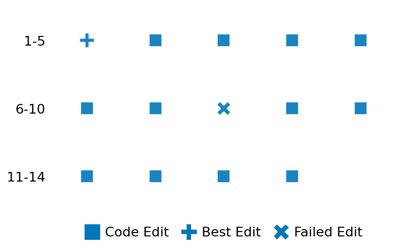

SETTING:
You're an autonomous programmer tasked with solving a specific problem. You are to use the commands defined below to accomplish this task. Every message you send incurs a cost—you will be informed of your usage and remaining budget by the system.
You will be evaluated based on the best-performing piece of code you produce, even if the final code doesn't work or compile (as long as it worked at some point and achieved a score, you will be eligible).
Apart from the default Python packages, you have access to the following additional packages:
- cryptography
- cvxpy
- cython
- dace
- dask
- diffrax
- ecos
- faiss-cpu
- hdbscan
- highspy
- jax
- networkx
- numba
- numpy
- ortools
- pandas
- pot
- psutil
- pulp
- pyomo
- python-sat
- pythran
- scikit-learn
- scipy
- sympy
- torch
YOUR TASK:
Your objective is to define a class named `Solver` in `solver.py` with a method:
```
class Solver:
def solve(self, problem, **kwargs) -> Any:
"""Your implementation goes here."""
...
```
IMPORTANT: Compilation time of your init function will not count towards your function's runtime.
This `solve` function will be the entrypoint called by the evaluation harness. Strive to align your class and method implementation as closely as possible with the desired performance criteria.
For each instance, your function can run for at most 10x the reference runtime for that instance. Strive to have your implementation run as fast as possible, while returning the same output as the reference function (for the same given input). Be creative and optimize your approach!
Your messages should include a short thought about what you should do, followed by a _SINGLE_ command. The command must be enclosed within ``` and ```, like so:
<Reasoning behind executing the command>
```
<command>
```
IMPORTANT: Each set of triple backticks (```) must always be on their own line, without any other words or anything else on that line.
Here are the commands available to you. Ensure you include one and only one of the following commands in each of your responses:
- `edit`: Replace a range of lines with new content in a file. This is how you can create files: if the file does not exist, it will be created. Here is an example:
```
edit
file: <file_name>
lines: <start_line>-<end_line>
---
<new_content>
---
```
The command will:
1. Delete the lines from <start_line> to <end_line> (inclusive)
2. Insert <new_content> starting at <start_line>
3. If both <start_line> and <end_line> are 0, <new_content> will be prepended to the file
Example:
edit
file: solver.py
lines: 5-7
---
def improved_function():
print("Optimized solution")
---
- `ls`: List all files in the current working directory.
- `view_file <file_name> [start_line]`: Display 100 lines of `<file_name>` starting from `start_line` (defaults to line 1).
- `revert`: Revert the code to the best-performing version thus far.
- `reference <string>`: Query the reference solver with a problem and receive its solution. If the problem's input is a list, this command would look like:
```
reference [1,2,3,4]
```
- `eval_input <string>`: Run your current solver implementation on the given input. This is the only command that shows stdout from your solver along with both solutions. Example:
```
eval_input [1,2,3,4]
```
- `eval`: Run evaluation on the current solution and report the results.
- `delete`: Delete a range of lines from a file using the format:
```
delete
file: <file_name>
lines: <start_line>-<end_line>
The command will delete the lines from <start_line> to <end_line> (inclusive)
Example:
delete
file: solver.py
lines: 5-10
```
- `profile <filename.py> <input>`: Profile your currently loaded solve method's performance on a given input. Shows the 25 most time-consuming lines. Requires specifying a python file (e.g., `solver.py`) for validation, though profiling runs on the current in-memory code.
Example:
```
profile solver.py [1, 2, 3]
```
- `profile_lines <filename.py> <line_number1, line_number2, ...> <input>`: Profiles the chosen lines of the currently loaded code on the given input. Requires specifying a python file for validation.
Example:
```
profile_lines solver.py 1,2,3 [1, 2, 3]
```
**TIPS:**
After each edit, a linter will automatically run to ensure code quality. If there are critical linter errors, your changes will not be applied, and you will receive the linter's error message. Typically, linter errors arise from issues like improper indentation—ensure your edits maintain proper code formatting.
**Cython Compilation:** Edits creating or modifying Cython (`.pyx`) files will automatically trigger a compilation attempt (requires a `setup.py`). You will be notified if compilation succeeds or fails. If it fails, the edit to the `.pyx` file will be automatically reverted.
If the code runs successfully without errors, the in-memory 'last known good code' will be updated to the new version. Following successful edits, you will receive a summary of your `solve` function's performance compared to the reference.
If you get stuck, try reverting your code and restarting your train of thought.
Do not put an if __name__ == "__main__": block in your code, as it will not be ran (only the solve function will).
Keep trying to better your code until you run out of money. Do not stop beforehand!
**GOALS:**
Your primary objective is to optimize the `solve` function to run as as fast as possible, while returning the optimal solution.
You will receive better scores the quicker your solution runs, and you will be penalized for exceeding the time limit or returning non-optimal solutions.
Below you find the description of the task you will have to solve. Read it carefully and understand what the problem is and what your solver should do.
**TASK DESCRIPTION:**
Sha256Hashing Task:
Task Description:
Compute the SHA-256 hash of a given plaintext. This tasks uses the `cryptography` library. SHA-256 (Secure Hash Algorithm 256-bit) is a cryptographic hash function that takes an input (plaintext) and produces a 256-bit (32-byte) hash value. The primary computational cost scales with the length of the plaintext.
Input:
A dictionary with key:
- "plaintext": A bytes object representing the data to hash. The size of this data will scale with the problem size 'n'.
Example input:
{
"plaintext": b'data to hash' * 100 # Example scaled plaintext
}
Output:
A dictionary containing:
- "digest": A bytes object representing the SHA-256 hash (always 32 bytes).
Example output:
# The actual output depends on the exact input plaintext.
# This is a conceptual placeholder.
{
"digest": b'\x01\x02...\x1f\x20' # 32 bytes SHA-256 hash
}
Category: cryptography
Below is the reference implementation. Your function should run much quicker.
import hmac
import random
from typing import Any
from cryptography.hazmat.primitives import hashes
| 01: def solve(self, problem: dict[str, Any]) -> dict[str, bytes]:
| 02: """
| 03: Compute the SHA-256 hash of the plaintext using the cryptography library.
| 04: Uses cryptography.hazmat.primitives.hashes to compute the digest.
| 05:
| 06: :param problem: A dictionary containing the problem with key "plaintext".
| 07: :return: A dictionary with key "digest" containing the SHA-256 hash value.
| 08:
| 09:
| 10: NOTE: Your solution must pass validation by:
| 11: 1. Returning correctly formatted output
| 12: 2. Having no NaN or infinity values
| 13: 3. Matching expected results within numerical tolerance
| 14: """
| 15: plaintext = problem["plaintext"]
| 16:
| 17: try:
| 18: digest = hashes.Hash(hashes.SHA256())
| 19: digest.update(plaintext)
| 20: hash_value = digest.finalize()
| 21:
| 22: return {"digest": hash_value}
| 23:
| 24: except Exception as e:
| 25: raise
| 26:
This function will be used to check if your solution is valid for a given problem. If it returns False, it means the solution is invalid:
import hmac
import random
from typing import Any
from cryptography.hazmat.primitives import hashes
| 01: def is_solution( problem: dict[str, Any], solution: dict[str, bytes] | Any) -> bool:
| 02: """
| 03: Check if the SHA-256 hash solution is valid and optimal.
| 04:
| 05: This method checks:
| 06: - The solution contains the 'digest' key
| 07: - The digest is a bytes object
| 08: - The digest matches the result from solve()
| 09:
| 10: :param problem: A dictionary containing the problem with key "plaintext".
| 11: :param solution: A dictionary containing the hash solution with key "digest".
| 12: :return: True if the solution matches the result from solve().
| 13: """
| 14: if not isinstance(solution, dict) or "digest" not in solution:
| 15: logging.error(
| 16: f"Invalid solution format. Expected dict with 'digest'. Got: {type(solution)}"
| 17: )
| 18: return False
| 19:
| 20: try:
| 21: # Get the correct result by calling the solve method
| 22: reference_result = solve(problem)
| 23: reference_digest = reference_result["digest"]
| 24: except Exception as e:
| 25: # If solve itself fails, we cannot verify the solution
| 26: logging.error(f"Failed to generate reference solution in is_solution: {e}")
| 27: return False
| 28:
| 29: solution_digest = solution["digest"]
| 30:
| 31: # Ensure digest is bytes before comparison
| 32: if not isinstance(solution_digest, bytes):
| 33: logging.error("Solution 'digest' is not bytes.")
| 34: return False
| 35:
| 36: return hmac.compare_digest(reference_digest, solution_digest)
| 37:
 AlgoTuner Trajectory
AlgoTuner Trajectory
AlgoTune Task:
sha256_hashing
Model:
Gemini 2.5 Pro
Speedup
1.000x
Total Budget
$1.00
Initial System Prompt
AlgoTune Task Description
Sha256Hashing Task:
Task Description:
Compute the SHA-256 hash of a given plaintext. This tasks uses the `cryptography` library. SHA-256 (Secure Hash Algorithm 256-bit) is a cryptographic hash function that takes an input (plaintext) and produces a 256-bit (32-byte) hash value. The primary computational cost scales with the length of the plaintext.
Input:
A dictionary with key:
- "plaintext": A bytes object representing the data to hash. The size of this data will scale with the problem size 'n'.
Example input:
{
"plaintext": b'data to hash' * 100 # Example scaled plaintext
}
Output:
A dictionary containing:
- "digest": A bytes object representing the SHA-256 hash (always 32 bytes).
Example output:
# The actual output depends on the exact input plaintext.
# This is a conceptual placeholder.
{
"digest": b'\x01\x02...\x1f\x20' # 32 bytes SHA-256 hash
}
Category: cryptography
Reference Implementation
import hmac
import random
from typing import Any
from cryptography.hazmat.primitives import hashes
def solve(self, problem: dict[str, Any]) -> dict[str, bytes]:
"""
Compute the SHA-256 hash of the plaintext using the cryptography library.
Uses cryptography.hazmat.primitives.hashes to compute the digest.
:param problem: A dictionary containing the problem with key "plaintext".
:return: A dictionary with key "digest" containing the SHA-256 hash value.
NOTE: Your solution must pass validation by:
1. Returning correctly formatted output
2. Having no NaN or infinity values
3. Matching expected results within numerical tolerance
"""
plaintext = problem["plaintext"]
try:
digest = hashes.Hash(hashes.SHA256())
digest.update(plaintext)
hash_value = digest.finalize()
return {"digest": hash_value}
except Exception as e:
raiseBest AlgoTuner-Generated Code
solver.py
import ctypes
import ctypes.util
from typing import Any, Callable, Dict
# This module is the final attempt to build the fastest possible SHA-256 solver.
# The core strategy is to call OpenSSL's one-shot EVP_Digest function directly
# via ctypes. This is theoretically faster than hashlib's two-step C process.
# This implementation includes aggressive micro-optimizations to minimize all
# Python and FFI overhead.
_solve_func: Callable[[bytes], bytes]
try:
# Find and load libcrypto. Using CDLL(None) is a robust fallback for
# sandboxed environments where hashlib has already loaded the library.
libcrypto_path = ctypes.util.find_library('crypto')
libcrypto = ctypes.CDLL(libcrypto_path or None)
# Define C function signatures for performance and correctness.
EVP_get_digestbyname = libcrypto.EVP_get_digestbyname
EVP_get_digestbyname.argtypes = [ctypes.c_char_p]
EVP_get_digestbyname.restype = ctypes.c_void_p
EVP_Digest = libcrypto.EVP_Digest
EVP_Digest.argtypes = [
ctypes.c_char_p, ctypes.c_size_t, ctypes.c_char_p,
ctypes.POINTER(ctypes.c_uint), ctypes.c_void_p, ctypes.c_void_p
]
EVP_Digest.restype = ctypes.c_int
# --- One-time setup at module load time ---
SHA256_MD_PTR = EVP_get_digestbyname(b"sha256")
if not SHA256_MD_PTR:
raise ImportError("SHA256 not supported by OpenSSL")
# Pre-allocate all objects needed in the hot loop to avoid runtime overhead.
digest_buffer = ctypes.create_string_buffer(32)
digest_len = ctypes.c_uint()
digest_len_ptr = ctypes.byref(digest_len) # Pre-create pointer object.
def solve_with_ctypes(plaintext: bytes) -> bytes:
"""
Calls the one-shot EVP_Digest C function. This is the hot path, stripped
of all non-essential operations, including error checking.
"""
EVP_Digest(
plaintext, len(plaintext), digest_buffer,
digest_len_ptr, SHA256_MD_PTR, None
)
# Return a new Python bytes object by slicing the raw buffer view.
return digest_buffer.raw[:digest_len.value]
_solve_func = solve_with_ctypes
_solve_func(b"warmup") # Sanity check the FFI linkage.
except (ImportError, OSError, AttributeError):
# Fallback to standard hashlib if the ctypes approach fails for any reason.
import hashlib
_sha256 = hashlib.sha256
def solve_with_hashlib(plaintext: bytes) -> bytes:
return _sha256(plaintext).digest()
_solve_func = solve_with_hashlib
class Solver:
"""
A solver that computes SHA-256 hashes by dispatching to the fastest
available function, determined at module load time.
"""
@staticmethod
def solve(problem: Dict[str, Any], **kwargs) -> Dict[str, Any]:
"""
Computes the SHA-256 hash. This is a static method to eliminate
instance binding overhead. It calls a pre-compiled function that
uses the most optimized path available.
"""
return {"digest": _solve_func(problem["plaintext"])}Speedup vs Budget Plot
Speedup vs Budget

Action Sequence
